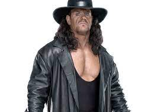

Boxing
Here are some of the scariest professional boxers to fight:
- Mike Tyson
- Height: 5'10"
- Weight: 220 lbs
- Reach: 71 inches
- Record: 50-6 (44 KOs)
- Longest unbeaten streak: 37 wins
- Youngest heavyweight champion in history at age 20
- Named "Fighter of the Year" by The Ring magazine twice
- Inducted into the International Boxing Hall of Fame in 2011
- George Foreman
- Height: 6'3"
- Weight: 240 lbs
- Reach: 82 inches
- Record: 76-5 (68 KOs)
- Oldest heavyweight champion in history at age 45
- Two-time heavyweight champion
- Inducted into the International Boxing Hall of Fame in 2003
- Deontay Wilder
- Height: 6'7"
- Weight: 220 lbs
- Reach: 83 inches
- Record: 42-1-1 (41 KOs)
- Won bronze medal at the 2008 Olympics in Beijing
- Longest reign as WBC heavyweight champion
- Known for his devastating punching power

Mixed Martial Arts
Here are some of the scariest professional MMA fighters to fight:
- Conor McGregor
- Height: 5'9"
- Weight: 155 lbs (lightweight division)
- Reach: 74 inches
- Record: 22-5 (19 KOs)
- Former featherweight and lightweight champion in the UFC
- Fastest victory in UFC title fight history (13 seconds)
- First fighter to hold two UFC titles in different weight classes simultaneously
- Jon Jones
- Height: 6'4"
- Weight: 205 lbs (light heavyweight division)
- Reach: 84.5 inches
- Record: 26-1 (1 NC) (10 KOs, 6 submissions)
- Longest reign as UFC light heavyweight champion (over 2,000 days)
- Known for his unorthodox fighting style and creativity in the octagon
- Inducted into the UFC Hall of Fame in 2021
- Amanda Nunes
- Height: 5'8"
- Weight: 135 lbs (bantamweight division)
- Reach: 69 inches
- Record: 21-4 (14 KOs, 3 submissions)
- Current UFC women's bantamweight and featherweight champion
- First woman in UFC history to hold titles in two weight classes simultaneously
- Known for her knockout power and well-rounded fighting style

Wrestling
Here are some of the scariest professional wrestlers to fight:
- Brock Lesnar
- Height: 6'3"
- Weight: 286 lbs
- Finishers: F-5, Kimura Lock
- Record: 6-3 (in WWE, not including his time in UFC)
- Won WWE Championship, WWE Universal Championship, and NCAA wrestling championship
- Known for his brute strength and intense fighting style
- Also competed in UFC, winning the UFC Heavyweight Championship in 2008
- Undertaker 
- Height: 6'10"
- Weight: 309 lbs
- Finishers: Tombstone Piledriver, Chokeslam
- Record: 25-2 (at WrestleMania, WWE's biggest event)
- Won multiple WWE Championships, World Heavyweight Championships, and Royal Rumbles
- Known for his spooky and mystical persona, as well as his legendary WrestleMania streak
- Inducted into the WWE Hall of Fame in 2020
- Stone Cold Steve Austin
- Height: 6'2"
- Weight: 252 lbs
- Finishers: Stone Cold Stunner, Million Dollar Dream
- Record: Multiple WWE Championship and Royal Rumble wins
- Known for his rebellious attitude and anti-authority persona
- Helped usher in the "Attitude Era" of WWE in the late 1990s
- Inducted into the WWE Hall of Fame in 2009
Football
Here are some of the scariest professional football players to fight:
- Ray Lewis
- Height: 6'1"
- Weight: 250 lbs
- Teams: Baltimore Ravens
- Accolades: 2x Defensive Player of the Year, 13x Pro Bowl, 2x Super Bowl Champion, Super Bowl MVP
- Career tackles: 2,061
- Career interceptions: 31
- Known for his ferocious hits and leadership on the field and killing a dude
- Lawrence Taylor
- Height: 6'3"
- Weight: 237 lbs
- Teams: New York Giants
- Accolades: 3x Defensive Player of the Year, 10x Pro Bowl, 2x Super Bowl Champion, NFL MVP
- Career tackles: 1,089
- Career sacks: 132.5
- Known for revolutionizing the linebacker position and being one of the most dominant defensive players in NFL history
- Joey Porter
- Height: 6'3"
- Weight: 250 lbs
- Teams: Pittsburgh Steelers, Miami Dolphins, Arizona Cardinals
- Accolades: 4x Pro Bowl, 1x First-team All-Pro, 2x Second-team All-Pro, 2x Super Bowl Champion
- Career tackles: 748
- Career sacks: 98
- Known for his trash-talking and physical play on the field

Basketball
Here are some of the scariest professional basketball players to fight:
- Dennis Rodman
- Height: 6'7"
- Weight: 220 lbs
- Teams: Detroit Pistons, San Antonio Spurs, Chicago Bulls, Los Angeles Lakers, Dallas Mavericks
- Accolades: 2x NBA All-Star, 2x Defensive Player of the Year, 7x NBA Rebounding Champion, 5x NBA Champion
- Career rebounds per game: 13.1
- Career blocks per game: 0.7
- Known for his rebounding, defense, and controversial behavior both on and off the court
- Shaq
- Height: 7'1"
- Weight: 325 lbs
- Career points: 28,596
- Career rebounds: 13,099
- Career assists: 3,026
- NBA Championships won: 4
- Named NBA Finals MVP three times
- Inducted into the Naismith Memorial Basketball Hall of Fame in 2016
- Metta World Peace
- Height: 6'7"
- Weight: 260 lbs
- Teams: Chicago Bulls, Indiana Pacers, Sacramento Kings, Houston Rockets, Los Angeles Lakers, New York Knicks
- Accolades: NBA All-Star, NBA Defensive Player of the Year, NBA Champion
- Career points per game: 13.2
- Career rebounds per game: 4.5
- Known for his physical play and controversial behavior, including his role in the infamous "Malice at the Palace" brawl